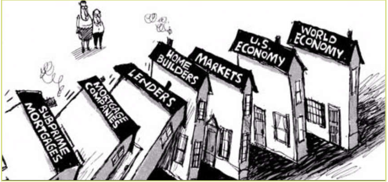
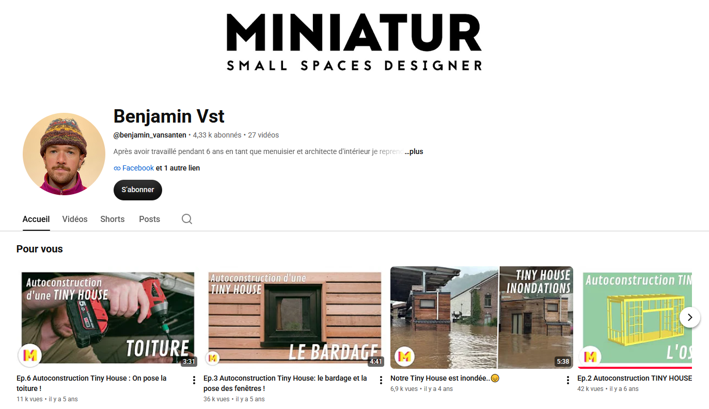
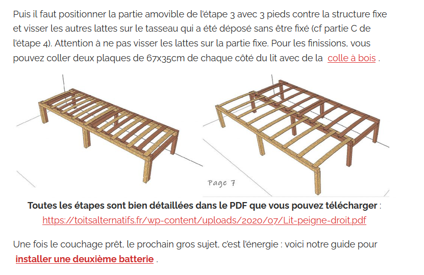

Tiny House — Lancement du projet
Compétence attendue : « Modéliser et faire l'étude énergétique de votre maison / appartement ». Travail en binôme.
Une maison mobile, née d'une crise
Les Tiny House (mignonnes petites maisons) sont nées aux États-Unis à cause de la crise immobilière de 2008 (endettement des ménages). Ce mouvement a rapidement pris de l'ampleur jusqu'à arriver en France, vers 2012.
Ce type de construction, bien moins cher qu'une maison traditionnelle, prône simplicité de vie et sobriété volontaire. Elles sont souvent construites sur une remorque, en ossature bois, et elles respectent les mêmes exigences de confort que les autres habitations : isolation, étanchéité, électricité, eau chaude, chauffage, etc.
Ce type d'habitation est aussi écologique, car il permet une diminution des quantités de matériaux et de consommations d'énergies. Cela demande tout de même de savoir se débarrasser du superflu pour revenir à l'essentiel…
Le défi consiste à optimiser l'espace — la notion de gain de place est essentielle ! Placards coulissants, meubles hybrides, espaces multi-fonctions et autres idées permettent de faire de la Tiny House une maison confortable tout au long de l'année.


Ce que vous allez devoir rendre
Dans ce projet vous allez devoir rendre tout un dossier d'étude d'une Tiny House. Vous allez devoir concevoir :
- Des plans
- Une maquette 3D
- Une maquette physique
- Un dossier explicatif
« Comment vivre le plus confortablement possible dans une maison mobile en limitant les impacts environnementaux ? »
Dans la partie A de cette séquence, vous avez déjà acquis les bases nécessaires : réaliser un croquis de votre habitat, le transformer en plan architectural à l'aide de relevés de mesures précis, comprendre le DPE (diagnostic de performance énergétique), l'isolation thermique, ainsi que le fonctionnement de l'installation électrique. Il vous reste maintenant à aller plus loin en complétant cette représentation : vous ajouterez des vues de face et de côté afin de représenter fidèlement le réel, avant de passer à une représentation numérique en 3D d'un type d'habitat qui vous est proposé, puis à un prototypage concret grâce à une découpeuse laser au Fablab.
Trois familles d'exigences
Le cahier des charges du client se résume dans un diagramme des exigences. Il se décompose en trois branches, dont chacune conditionne des choix précis de conception.
Avoir une zone de repos (dormir deux personnes) et une zone de repas (déjeuner à deux personnes, laver les assiettes) ; avoir des toilettes (un seul sanitaire) ; pouvoir se laver (deux personnes séparément) ; protéger les denrées périssables (pour deux personnes) ; avoir une zone de rangement (vêtements et autres) ; avoir une zone de loisirs (lieu de détente) ; être esthétique (style original et équilibré).
Limiter les coûts matériaux (matériaux peu chers) ; respecter des résistances thermiques minimales — Rmur = 2,5 m².K/W, Rsol = 2 m².K/W, Rtoit = 3,5 m².K/W ; s'adapter à la route (passer sous un tunnel, hauteur max. 3 m avec la remorque) ; s'adapter à la remorque (dimensions max. 6 m × 2,5 m) ; respecter les normes de sécurité (électrique, chauffage, structure…) ; garder un espace technique accessible de l'extérieur, de 50 × 50 × 50 cm ; être hors d'eau et hors d'air.
Choisir des matériaux écologiques (énergie grise faible) ; utiliser des énergies renouvelables pour l'électricité et le chauffage ; être autonome en énergie (produire 100 % de l'électricité et de la chaleur consommées).

Ressources vidéo
Pour commencer à vous familiariser avec le sujet avant l'activité de découverte, la chaîne YouTube Miniatur suit la construction d'une Tiny House de A à Z.

Pour aller plus loin, le site Toits alternatifs propose des plans gratuits et des questions pratiques pour construire sa propre Tiny House.
